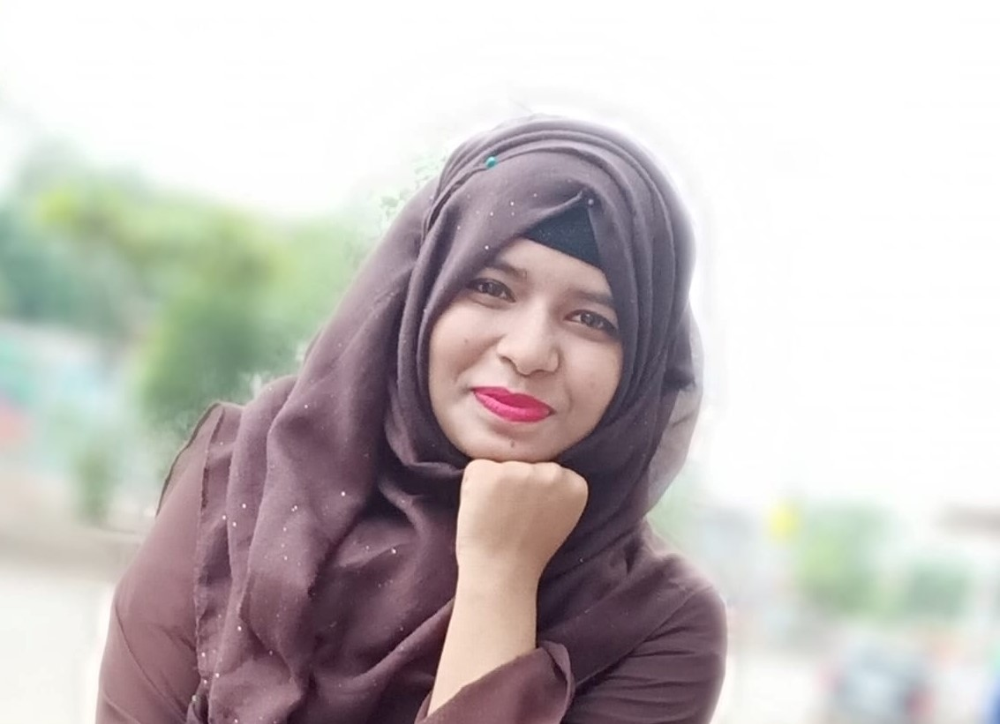

Jasmine Akter
Floor#5A, Road#01, Block#G,
Mirpur-02, Dhaka-1216, Bangladesh.
Mobile: 01616813273
Email: jasminetripti5@gmail.com

A self-motivated individual who wishes to give best effort in serving an organization where I can explore my analytical skills, academic qualifications and real life experiences at various sectors in the competitive field of corporate world in order to achieve success as a fresher and develop a career opportunity.
Field of interest: Full stack web development.
- Programming Language: C, C++, JAVA
- Web Technology: HTML5, CSS3
- RDBMS: Mysql
- Development Tools: Codeblocks, Netbeans, Sublimetext
- Web Server: Xampp
- Source Control: Github
- Language: Mother tongue- Bangla, Full Working Knowledge in English
- Soft Skill: Good listener and communicator, networker, effective participator, team player and excellent
presentation skill, Familiar with multicultural environment.
- Git Hub: https://github.com/jazz_jasmine
- Facebook: https://www.facebook.com/jasmine tripti
- LinkedIn: https://www.linkedin.com/in/jasmine-368330139/
| INSTITUTION |
CONCENTRATION |
PASSING YEAR |
RESULT |
| Bachelor of Science
(Hons.)
Department of Computer
Science & Engineering(CSE)
(Major: Software)
Bangladesh University of
Business & Technology
(BUBT)
|
Computer Science & Engineering(CSE) |
2021 |
CGPA: appeared(out of 4.00) |
| Higher Secondary
Certificate
(HSC):
Major General Mahmudul
Hasan Adarsha College
Dhaka Board
|
Science |
2016 |
GPA: 5.00(out of 5.00) |
| Secondary School Certificate
(SSC):
Dighulia Shahid Mizanur
Rahman High School
Dhaka Board
|
Science |
2014 |
GPA: 5.00(out of 5.00) |